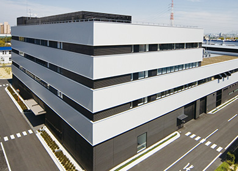
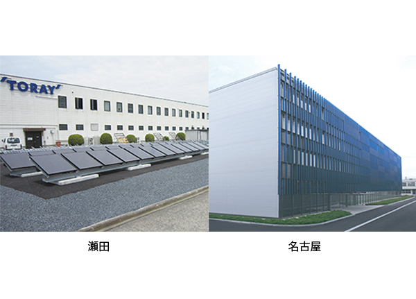
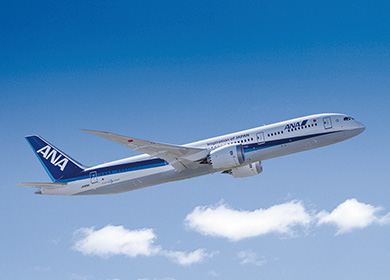
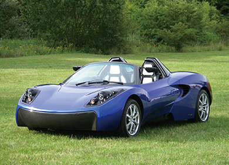
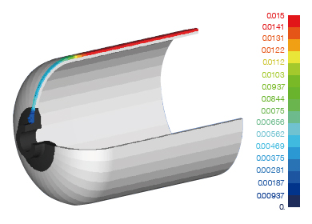
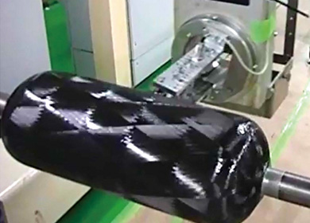
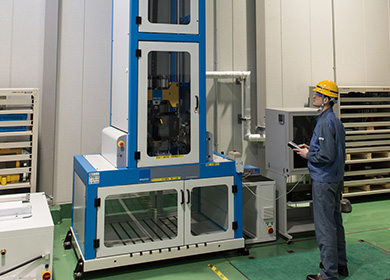
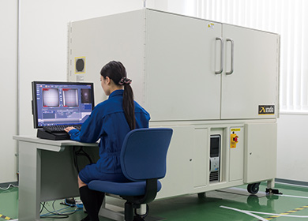

- HOME
- 研究・技術開発
- 研究・技術開発体制
- 開発・エンジニアリング組織
- A&Aセンター
A&Aセンター
A&Aセンターは、滋賀・愛媛・名古屋の各事業場・工場に分散していた自動車・航空機用途向け先端材料の開発拠点を一ヵ所に集約し、効率化する目的で、2009年4月に名古屋事業場に設立されました。
A&Aセンターは、コンポジット（炭素繊維複合材料）の基材・成形技術開発を担うアドバンスドコンポジットセンター（ACC）、自動車向け先端材料ならびに成形・設計関連の総合技術開発を行う環境・モビリティ開発センター（EMC）から構成された総合技術開発拠点です。相互に有機的に連携・補完し合うことで、より多くのお客様に東レグループの先端材料・技術を融合したソリューションを提案することができます。名古屋事業場が自動車・航空機産業の主要企業と隣接するという好立地を活かし、お客様との共同開発の強化、開発のスピードアップを図っていきます。
A&Aセンターの構造と機能

自動車・航空機・IT・産業用途
ACC
アドバンスドコンポジットセンター

自動車用途
EMC
環境・モビリティ開発センター

機体構造重量の50％に東レのCFRPが採用されているボーイング787型機。航空機に求められるCFRP製造技術の高度化を目標に、先端材料とプロセスの融合技術を常に深化させ、追究しています。
写真提供：ANA

東レのコンセプトEV 「TEEWAVE® AR1」。CFRPや独自の成形技術の適用により、車体重量846kgという軽量化を実現しました。CFRPだけでなく、高機能フィルム、バイオプラスチックなど、東レの新素材・新技術が盛り込まれています。
アドバンスドコンポジットセンター（ACC）
アドバンスドコンポジットセンターは、コンポジット（炭素繊維複合材料）事業の拡大および革新的な基材・成形技術の創出・強化のために、2009年4月に設立されました。特に、今後ますますコンポジット化が要望されている自動車・航空機・クリーンエネルギー分野の技術開発に注力しています。
自動車・航空機部材関係技術として、RTM、プレス、フィラメントワインディング成形等の成形技術自体の高性能化に加え、各成形法に適した高機能基材の開発も進め、材料とプロセス技術の融合を図った取組みを進めています。高機能基材の一例としては、熱硬化性樹脂を用いた高機能CF-SMC基材や高効率RTM基材、航空機向け高機能プリプレグを、熱可塑性樹脂を用いた一方向テープ基材やスタンパブルシート基材等の開発を進めています。
また、クリーンエネルギー関係技術として、CFRP圧力容器成形および評価技術、革新省エネルギー熱分解法を適用した炭素繊維リサイクル技術の開発も行っています。
トヨタ自動車「MIRAI」に採用された東レの炭素繊維材料


CFRP圧力容器のCAE解析結果（左）、成形（右）
環境・モビリティ開発センター（EMC）
環境・モビリティ開発センター（EMC）は、東レ先端材料の自動車向け総合技術開発拠点として2008年に開所し、自動車市場での課題解決に向けて炭素繊維複合材料による軽量化や、ナノアロイ®樹脂による衝突安全性向上、金属光沢調フィルム ピカサス®による自動運転支援システム構築などの革新的なソリューション提供を目指した開発を行っています。素材のみでなく加工法や設計技術、評価・解析技術も組み合わせた総合的なご提案を実行し、お客様と一体になった技術開発を推進するための体制と設備を整えています。
また、東レグループの自動車事業をグローバルに拡大すべく、2017年にはドイツ・ミュンヘン近郊に「オートモーティブセンター欧州」も開所し、国内同様、在欧州関連企業との共同開発を進めるためのプロマネ機能や、試作、評価から設計・解析機能を活用して、先端材料による提案活動を国内外東レグループ各社とも連携しながら実行することにより、欧州での新規用途開拓、事業拡大を目指します。

大型部品の衝撃荷重入力時の挙動を把握し、最適な樹脂や複合材料の新規開発につなげます。

複合材料の内部欠陥や繊維配向状態を非破壊で検査し、材料に最適な成形条件や部品構造を創出します。